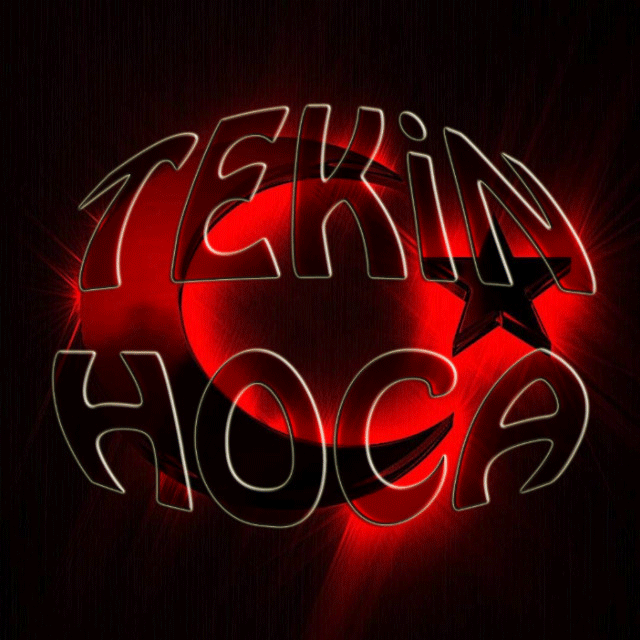

MAT.7.1.7. Gerçek yaşam durumları üzerinden doğru orantılı durumlara ilişkin problemleri çözebilme
Doğru orantılı durumları bir oran tablosuna yazmak, denk oranları görmeyi kolaylaştırır. Bu tablo bir grafiğe aktarıldığında, noktalar her zaman orijinden geçen bir doğru üzerinde yer alır.
Aşağıdaki tarif 4 kişilik hazırlanmıştır. Kaç kişilik yapmak istediğini gir; malzemeler orantılı olarak ölçeklensin.
Şöyle bir problemde kullanılacak sayıları aşağıya gir:
"(a) birimi (b) TL olan bir ürünün (c) birimi kaç liradır?"
Birim oran ve çapraz çarpma stratejileriyle aynı sonucu bulduğumuzu gör.
Problem türünü seçin, iki sayıyı yazın. Çözüm hem birim oran (1 %'lik değer) hem de oran tablosu stratejisiyle gösterilir; iki yolun sonucu aynı olmalıdır.